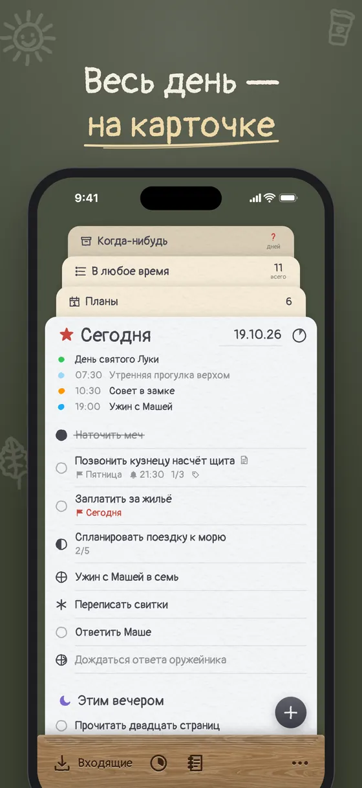
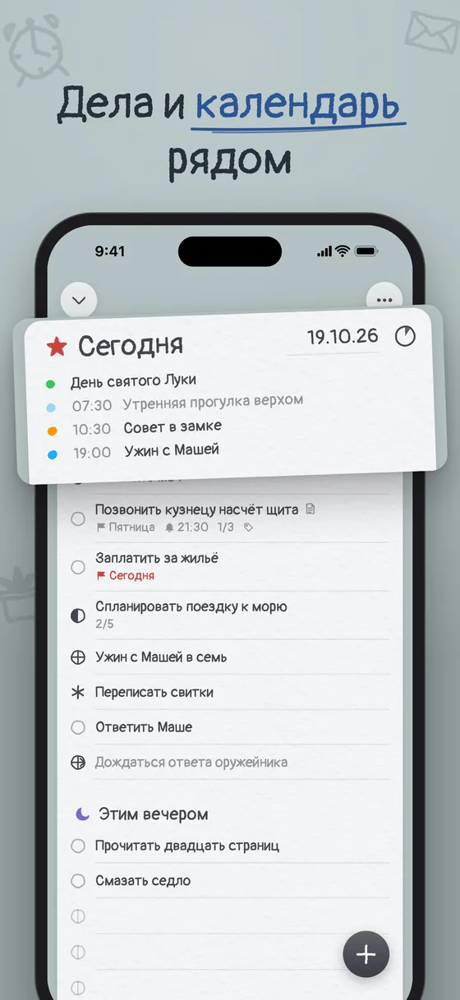
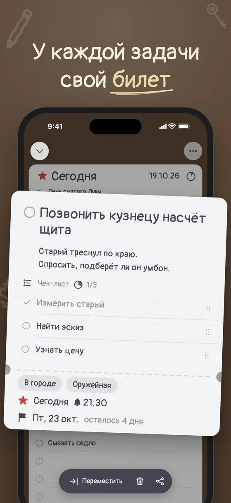
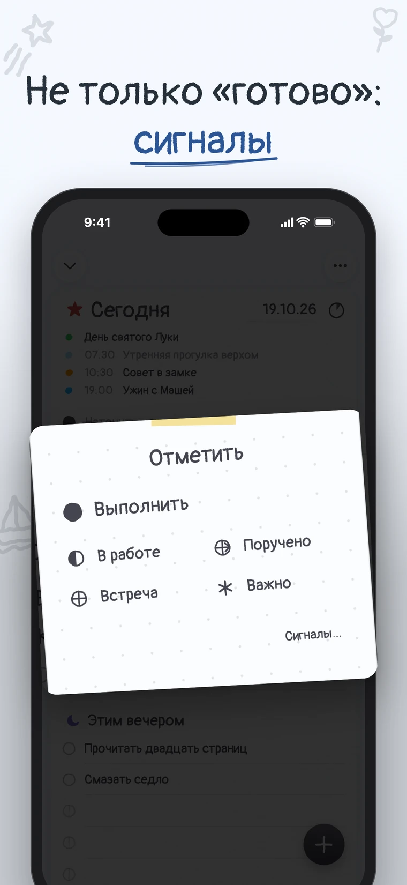
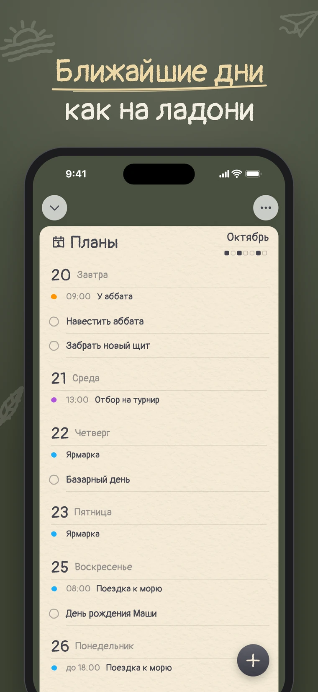
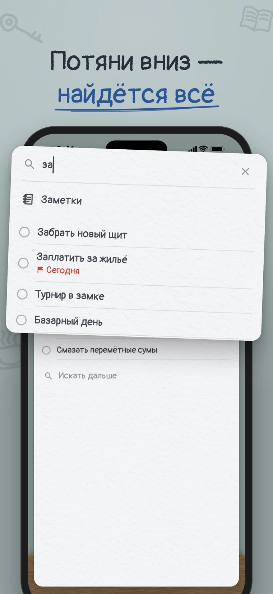
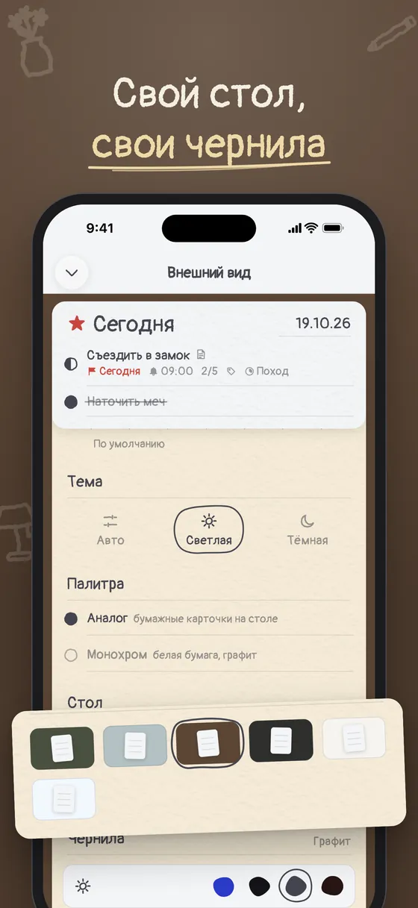
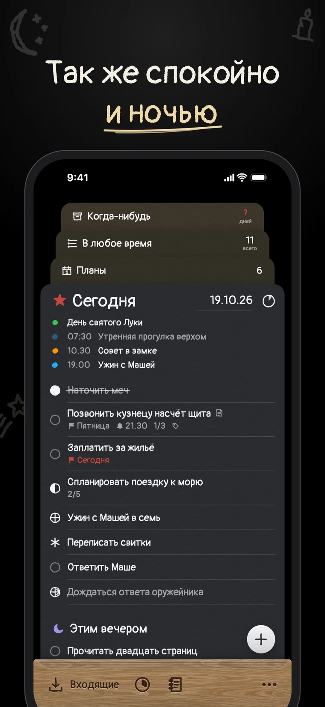
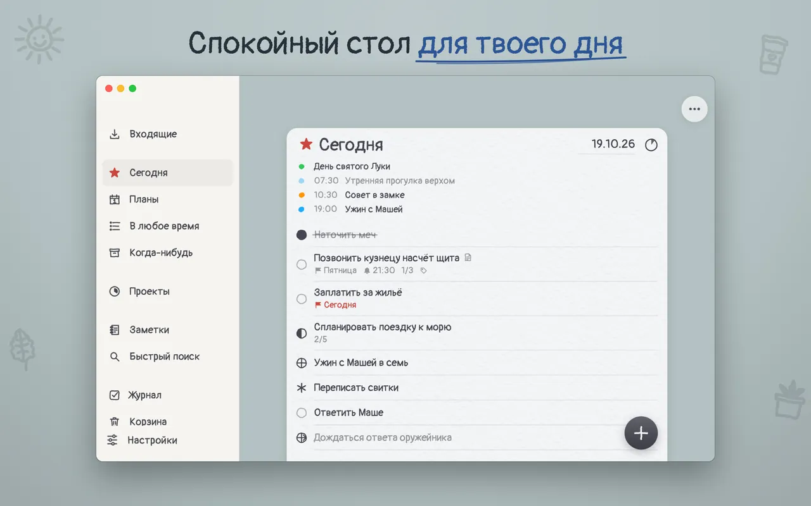

Весь день —
на одной карточке.
Taskward — спокойный список дел для iPhone и Mac. Каждый список — бумажная карточка на твоём столе.
Попробовать бету в TestFlightБесплатно и без аккаунта. Скоро в App Store.
Вытяни карточку из подставки — она ляжет на стол. Работай прямо на ней.
- Наточить меч
- Позвонить кузнецу насчёт щитаПятница21:301/3
- Заплатить за жильёСегодня
- Спланировать поездку к морю2/5
- Прочитать двадцать страниц
У каждого списка своя карточка
Списки хорошего планировщика, каждый на своей бумаге, написанный от руки.
Всё, что пришло в голову, пока не решил, что это.
То, что берёшь на сегодня, и вечер под ним.
Ближайшие дни, и календарь рядом с ними.
Запас дел, который ждёт, когда будешь готов.
Отложено, а не забыто. Иногда стоит пересмотреть.
Всё сделанное, в том порядке, как делал.
Задача открывается билетом
Заметки, чек-лист, теги, срок и напоминание — на карточке с отрывным корешком. Видно только то, что добавил; остальное ждёт карандашной меткой внизу.
Позвонить кузнецу насчёт щита
Старый треснул по краю. Спросить, подберёт ли он умбон.
- Измерить старый
- Найти эскиз
- Узнать цену
Больше, чем сделано или нет
Зажми кружок задачи и отметь, как она: в работе, поручено, жду ответа. Поручённое и ожидание уходят в карандаш, чтобы не мешать.
- Выполнено
- В работе
- Поручено
- Встреча
- Важно
- Жду ответа
Заметки
Пиши так, как сказал бы
Напиши «Тренировка завтра в 9 утра» — день и напоминание поставятся сами, а слова уйдут из названия. Тап по подсветке — если имел в виду просто слова.
Одна карточка на весь экран
Когда день требует всего внимания, разверни его карточку от края до края: без панели, без стола, без лишнего. Потяни вниз — и она снова на столе.
Настоящее приложение, на iPhone и Mac
Одни и те же списки на обоих, синхронно через твой iCloud. На Маке — боковая панель и быстрый поиск по ⌘F.









Твой стол, твои чернила
Выбери стол, на котором лежат карточки, цвет чернил, как зачёркивается сделанное, и гладкую или фактурную бумагу. Попробуй стол прямо здесь:
Стол
Чернила
Твоё остаётся у тебя
- Не нужно заводить аккаунт.
- Ни рекламы, ни слежки, ни аналитики.
- Задачи живут на твоих устройствах и в твоём iCloud — мы их не видим.
Впервые слышишь про GTD?
При первом запуске маленький рыцарь вручит тебе ворох поручений и покажет, как разобрать входящие, задачу за задачей. Пропустить можно в любой момент.